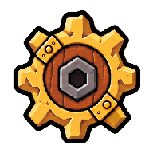
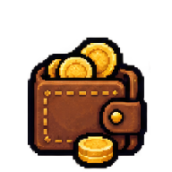
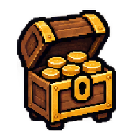
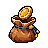
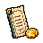
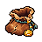
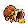
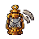

nav
Base
Simplified campfire
MASTER 505b173936d3e53db8296340d407fceaecf536d540dd8c50328f5ef5cfc7c484
48PX eb52eed0cf5596a333b361d3cd140ee7b27084af2dad7d4f2a6bb931aabf2364Page Visual Optimization · Phase 1
Exact-hash optical evidence approved. All Icons calibration directions are approved; Gate A remains open for other families.
Nine approved directions normalized into deterministic 192px review masters and direct nearest-neighbor 48px exports.
nav
Simplified campfire
MASTER 505b173936d3e53db8296340d407fceaecf536d540dd8c50328f5ef5cfc7c484
48PX eb52eed0cf5596a333b361d3cd140ee7b27084af2dad7d4f2a6bb931aabf2364nav
Wooden travel journal and quill
MASTER 3c54a3da83f5ca78a6b8fc98be65a1ffe473405411d2a49a966d490129c628a9
48PX e5bbd136aa6fe35c731401fb103e1adcccf83114321bba144b6803c001da196cnav
Warrior and mage handshake
MASTER 71f47ff78db03efef93a60dfa89315a6eec3fc9e8607632d53f5bc89ce9d747c
48PX 98194202610f382fe1394077fa889b7b0aa5d573679c5ad30b8631c2dd2971ddnav
Selected candidate A adventurer contract board
MASTER 500f3224eeedea2aedb958b4c352b21dc1e2f20b8164c518dfbe8f7ad1669862
48PX 928b10b5a834a23c60e9176aaaefbfc80d252a2dd2ee136fd1feaf09b87b465e
nav
Repaired brass gear
MASTER a0ce9c709543f6b9413a7b6c7fc31957892d1a3a0295485279f2311ada20aba6
48PX df47c1d7c0c961cb659757e144c6137ac681e8eedbc7909e49133704df023cce
mode
Wallet
MASTER 62a464651077244bde516ee393cf63a8a0abb1f141ca744b412afcdd28f883dc
48PX 59df5cbb970c5a1a4fcc3f8a3841e32821fea401c61ca90244a33ef53ce1548fmode
Overlapping receipts and coins
MASTER 3d9c590bed13983072be5ed952b3e31fd4a31086af894ce25805e5356bbe0182
48PX 58e61510d5eb6bf453cf7244c0dfb23b0b89851f2d173bf6ce64d17395a1b7af
mode
Open common-fund coin chest
MASTER 9be450c6b06a2ac8dd27e284c13250ab2430b8ef21aa861b1d6ad1a4836b804c
48PX f3a3b1704ddab90990eb3fddccc3d11a4f772009806e022a3634805ca0f83311action
Quill writing on a ledger page with secondary coin
MASTER 5f261384aa4e5748a932ed692bc5dfa3bedd30e0c0892c02571a73dc31567680
48PX 8e559e179652c8b05b2e513e00cc9b5ef6cf3cec87011118ae7bdaf2b21ab0e3The nine already-approved 48px exports are shown unchanged to compare scale, density, and grayscale silhouette.





Live semantic labels remain requiredEvery navigation, mode, action, event, and status consumer keeps visible text or an independent accessible name.
Review-onlyAll outputs remain under docs/design; no runtime asset changes and no web/public promotion.
Gate remains openIcons family calibration approved. Gate A remains open until the other asset families receive explicit approval.